IV. thunderbolt-ibverbs
Investigation
Before we can start our agent, we first need to quantify the task- what are we trying to do, and what's preventing us from doing it at the moment?
Stability
Update: the LKML stability patches below have since landed in mainline. We now build against a recent torvalds/linux tip and skip the local-patches dance entirely — kept here for context.
The first thing we need to investigate is the thunderbolt-net failure from the previous section: under bidirectional load, throughput collapses and the interface can eventually stop passing traffic without reporting a link-down event. We can't get anywhere if our interface locks up after a few minutes. After checking the Linux Kernel Mailing List, I found a patchset specifically addressing thunderbolt instability under load. Let's look at the patch series and see if they apply to our issue:
Under concurrent load on a single NHI with several rings simultaneously
in NAPI poll (e.g. a Maple Ridge TB4 transit forwarding tbnet traffic
between two peers), one ring's interrupt enable bit in
REG_RING_INTERRUPT_BASE can stay cleared. MSI-X stops for that ring,
NAPI is never rescheduled, but carrier is reported up and no driver
event fires. The ring stays masked until thunderbolt_net is reloaded.This seems exactly the issue we're seeing! Let's wrap the patches into a flake for our project:
{
description = "Patched Linux kernel for thunderbolt-ibverbs";
inputs.nixpkgs.url = "github:NixOS/nixpkgs/nixos-unstable";
outputs = { self, nixpkgs }:
let
system = "x86_64-linux";
pkgs = import nixpkgs { inherit system; };
# The LKML thunderbolt-stability patches we just walked through.
usb4KernelPatches = import ./kernel-workflow/patches {
inherit (pkgs) lib;
};
# Mainline Linux 7.1 + those patches.
linux_usb4 = pkgs.linuxManualConfig {
pname = "linux-usb4";
version = "7.1.0-rc1";
modDirVersion = "7.1.0-rc1";
src = pkgs.fetchurl { /* kernel.org tarball */ };
configfile = ./kernel-workflow/configs/strix.config;
kernelPatches = usb4KernelPatches;
};
in {
packages.${system} = {
# Bare kernel derivation, for advanced consumers...
inherit linux_usb4;
# ...and a full package set, which is what `boot.kernelPackages` wants.
linuxPackages_usb4 = pkgs.linuxPackagesFor linux_usb4;
};
};
}— from flake.nix; the patches list itself lives in kernel-workflow/patches/default.nix
One nixos-rebuild later and we're ready to re-test:
$ iperf -c 10.0.5.2 -t 180 --bidir -P 4
...
[SUM][RX-C] 0.00-180.00 sec 216 GBytes 10.3 Gbits/sec 0 sender
[SUM][RX-C] 0.00-180.00 sec 216 GBytes 10.3 Gbits/sec receiver
iperf Done.Excellent- our link is at least stable now, and we can start investigating our missing performance.
Performance
Let's be realistic about our expectations- how much could we expect from our configuration under ideal conditions?
strix-1 strix-2
┌────────┐ cable A: 2 lanes × 20 Gb/s ┌────────┐
│ USB4 ├──── lane 0 ──────────────────────┤ USB4 │
│ ctrl ├──── lane 1 ──────────────────────┤ ctrl │
│ c8:5 │ │ c7:5 │
├────────┤ cable B: 2 lanes × 20 Gb/s ├────────┤
│ USB4 ├──── lane 0 ──────────────────────┤ USB4 │
│ ctrl ├──── lane 1 ──────────────────────┤ ctrl │
│ c8:6 │ │ c7:6 │
└────────┘ └────────┘The advertised bandwidth is raw- we have to account for several layers of framing and encoding overhead before we get to the raw data rate:
┌────────────────────────────────────────┬─────────────┬────────────────────────────┐
│ Layer │ Bandwidth │ Loss │
├────────────────────────────────────────┼─────────────┼────────────────────────────┤
│ 2 lanes × 20 Gb/s symbol rate │ 40 Gb/s │ — │
├────────────────────────────────────────┼─────────────┼────────────────────────────┤
│ After 128b/132b encoding │ ~38.8 Gb/s │ ~3% │
├────────────────────────────────────────┼─────────────┼────────────────────────────┤
│ After USB4 framing / tunnel headers │ ~32–35 Gb/s │ ~10–15% │
├────────────────────────────────────────┼─────────────┼────────────────────────────┤
│ After PCIe-tunnel + TB headers │ ~25–28 Gb/s │ a bit more │
├────────────────────────────────────────┼─────────────┼────────────────────────────┤
│ Single TCP stream over thunderbolt-net │ ~9–10 Gb/s │ huge — the gap is software │
└────────────────────────────────────────┴─────────────┴────────────────────────────┘So, even after accounting for encoding overhead, we're still not getting the expected throughput. One thing that stood out to me was that these numbers seemingly have no relation to what speed the link trains at- 10 or 20GBps per-lane doesn't seem to change anything. This is a huge clue that our bottleneck is software-related, not hardware- we're not putting bytes on the wire fast enough (or reading them off- if we had flow control) to keep up with the link speed.
A natural place to start debugging software performance issues is to check interrupts-
$ grep thunderbolt /proc/interrupts | awk '{print $1, $NF}'
153: nhi-c8:00.5 (counting)
154: nhi-c8:00.5 0
155: nhi-c8:00.5 0
156: nhi-c8:00.5 0Interesting! We're only seeing interrupts for the first ring, and none for the others. Let's look how many queues we have:
❯ ls /sys/class/net/thunderbolt0/queues
rx-0 tx-0Okay- one rx queue and one tx queue- the driver didn't claim any more. Let's dig into the linux kernel and find out what's happening under the hood. Probably the first place to look is the drivers/net/thunderbolt/main.c, specifically the tbnet_open function:
static int tbnet_open(struct net_device *dev)
{
struct tbnet *net = netdev_priv(dev);
struct tb_xdomain *xd = net->xd;
u16 sof_mask, eof_mask;
struct tb_ring *ring;
unsigned int flags;
int hopid;
netif_carrier_off(dev);
flags = RING_FLAG_FRAME;
/* Only enable full E2E if the other end supports it too */
if (tbnet_e2e && net->svc->prtcstns & TBNET_E2E)
flags |= RING_FLAG_E2E;
ring = tb_ring_alloc_tx(xd->tb->nhi, -1, TBNET_RING_SIZE, flags);
if (!ring) {
netdev_err(dev, "failed to allocate Tx ring\n");
return -ENOMEM;
}
net->tx_ring.ring = ring;
hopid = tb_xdomain_alloc_out_hopid(xd, -1);
if (hopid < 0) {
netdev_err(dev, "failed to allocate Tx HopID\n");
tb_ring_free(net->tx_ring.ring);
net->tx_ring.ring = NULL;
return hopid;
}
net->local_transmit_path = hopid;
sof_mask = BIT(TBIP_PDF_FRAME_START);
eof_mask = BIT(TBIP_PDF_FRAME_END);
ring = tb_ring_alloc_rx(xd->tb->nhi, -1, TBNET_RING_SIZE, flags,
net->tx_ring.ring->hop, sof_mask,
eof_mask, tbnet_start_poll, net);
if (!ring) {
netdev_err(dev, "failed to allocate Rx ring\n");
tb_xdomain_release_out_hopid(xd, hopid);
tb_ring_free(net->tx_ring.ring);
net->tx_ring.ring = NULL;
return -ENOMEM;
}
net->rx_ring.ring = ring;
napi_enable(&net->napi);
start_login(net);
return 0;
}This function is what creates the network device for the Thunderbolt controller- at a high level, it declares the new network interface, allocates and assigns one transmit and one receive ring buffer to it. Two interesting things here:
- We ask
tb_xdomain_alloc_out_hopidfor a hopId to use for the transmit ring buffer. This gets saved onto the maintbnetstruct aslocal_transmit_path - When allocating the buffers, we need an "NHI" device:
xd->tb->nhi
Because we only have a single DMA ring for tx and rx, we only have one CPU core shuffling bytes on or off the wire- perhaps ~10Gbs is the fastest we can do this. Let's find out what this HopId and NHI things are.
NHI Controller
NHI stands for Native Host Interface and it's the standard interface used by USB4/Thunderbolt controllers to speak to the OS. We can find it enumerated on our PCI bus:
❯ lspci | grep USB4
00:01.1 PCI bridge: Advanced Micro Devices, Inc. [AMD] Strix/Strix Halo PCIe USB4 Bridge (rev 02)
00:01.2 PCI bridge: Advanced Micro Devices, Inc. [AMD] Strix/Strix Halo PCIe USB4 Bridge (rev 02)
c8:00.5 USB controller: Advanced Micro Devices, Inc. [AMD] Strix Halo USB4 Host Router
c8:00.6 USB controller: Advanced Micro Devices, Inc. [AMD] Strix Halo USB4 Host Router the first two items are the PCI bridge devices that the USB4 controller is connected to, not the controller itself
You can find the list of NHI devices that the linux kernel knows about here- one thing that is immediately obvious is that all of them are Intel controllers apart from the last, which covers all AMD USB4 controllers. The reason the linux kernel knows about so many Intel controllers is that they have quirks - small differences in hardware that require special handling. Intel have done the work to make linux aware of their quirks so that it can Do The Right Thing- either AMD controllers are perfect implementations of the USB4 spec that require no quirk handling- or simply that nobody at AMD has done the work, and we should expect bugs.
DMA Rings
The controller exchanges data with the host OS via DMA ring buffers. Instead of the controller notifying the kernel "hey, here are some bytes that i read off the wire", the kernel will allocate a DMA buffer and instruct the controller to write data direct to it. When complete, the controller can simply notify the kernel 'data is ready'. On the PCIe platform, this mechanism is implemented via MSI-X interrupts.
We need to go lower! Let's look at how the kernel implements thunderbolt-net and what primitives it's built on top of- perhaps we can test those primitives directly. Looking at thunderbolt.c, we can learn a bit about the thunderbolt/usb4 architecture. In nhi_regs.h, we can find the following definition:
enum ring_flags {
RING_FLAG_ISOCH_ENABLE = 1 << 27, /* TX only? */
RING_FLAG_E2E_FLOW_CONTROL = 1 << 28,
RING_FLAG_PCI_NO_SNOOP = 1 << 29,
RING_FLAG_RAW = 1 << 30, /* ignore EOF/SOF mask, include checksum */
RING_FLAG_ENABLE = 1 << 31,
};
/**
* struct ring_desc - TX/RX ring entry
* @phys: DMA mapped address of the frame
* @length: Size of the ring
* @eof: End of frame protocol defined field
* @sof: Start of frame protocol defined field
* @flags: Ring descriptor flags
* @time: Fill with zero
*
* For TX set length/eof/sof.
* For RX length/eof/sof are set by the NHI.
*/
struct ring_desc {
u64 phys;
u32 length:12;
u32 eof:4;
u32 sof:4;
enum ring_desc_flags flags:12;
u32 time; /* write zero */
} __packed;This struct defines the layout of a DMA ring descriptor used by the NHI- it has a phys field for the DMA address, length/eof/sof fields for the frame size, and flags for the ring descriptor flags.
The NHI registers are mapped into the PCI BAR 0 region, starting at REG_TX_RING_BASE. The controller tells us how many of these rings are supported via REG_CAPS:
/* The last 11 bits contain the number of hops supported by the NHI port. */
#define REG_CAPS 0x39640We know that thunderbolt-net is only using 1 ring, so there should be 2 left for other use.
Let's add some debugging to our new driver- expose some per-ring statistics about the DMA rings used by thunderbolt-net.
On our strix halo this reads 0x03- 3 rings available! We know that thunderbolt-net is only using 1 ring, perhaps we can convince it to take advantage of the other 2 rings?
Implementation
At this point the shape of our prospective solution is starting to become clear: a kernel driver that sits alongside thunderbolt-net, allocating DMA rings from the controller's NHI port in the same way, powering a state-machine driven by the Infiniband verbs API. I scaffolded this up and loaded it alongside thunderbolt-net. The kernel module creates a new InfiniBand device:
static int tbv_ibdev_register_one(struct tbv_state *state,
enum tbv_backend_type backend,
const char *name)
{
struct tbv_ibdev *dev;
struct device *dma_device;
int ret;
dev = ib_alloc_device(tbv_ibdev, base);
if (!dev)
return -ENOMEM;
dev->state = state;
dev->backend = backend;
dev->base.phys_port_cnt = TBV_IBDEV_PORTS;
dev->base.num_comp_vectors = num_possible_cpus();
dev->base.node_type = RDMA_NODE_IB_CA;
dev->base.uverbs_cmd_mask |=
BIT_ULL(IB_USER_VERBS_CMD_POST_SEND) |
BIT_ULL(IB_USER_VERBS_CMD_POST_RECV) |
BIT_ULL(IB_USER_VERBS_CMD_POLL_CQ) |
BIT_ULL(IB_USER_VERBS_CMD_REQ_NOTIFY_CQ);
ib_set_device_ops(&dev->base, &tbv_ibdev_ops);
dma_device = tbv_state_get_verbs_parent(state, backend);
dev->base.dev.parent = dma_device;
ret = ib_register_device(&dev->base, name, dma_device);
...
}— from kernel/ibdev.c, tbv_ibdev_register_one (line 5476)
After building and loading into the kernel, we can confirm it's alive:
$ sudo dmesg | grep thunderbolt_ibverbs
[12345.678901] thunderbolt_ibverbs: loaded
[12345.683472] thunderbolt_ibverbs: registered ib_device usb4_rdma0 dma_device=0000:c8:00.5To wire the module into a NixOS box on top of the patched kernel from earlier:
{ config, pkgs, ... }:
{
# Patched kernel from the previous chapter — `linuxPackages_usb4` is
# the upstream Linux kernel with the LKML thunderbolt-stability
# patches applied (see kernel-workflow/patches/).
boot.kernelPackages = pkgs.linuxPackages_usb4;
# Our new out-of-tree module, built against that kernel.
boot.extraModulePackages = [ pkgs.linuxPackages_usb4.thunderbolt-ibverbs ];
boot.extraKernelModules = [ "thunderbolt_ibverbs" ];
}— linuxPackages_usb4 overlay defined in flake.nix; module derivation in nix/kernel-module.nix
The init claims a Thunderbolt service slot so the controller calls back into us when a peer link comes up:
static const struct tb_service_id tbv_service_ids[] = {
{
.match_flags = TBSVC_MATCH_PROTOCOL_KEY |
TBSVC_MATCH_PROTOCOL_ID,
.protocol_key = "tbverbs",
.protocol_id = 1,
},
{ },
};
static struct tb_service_driver tbv_service_driver = {
.driver = {
.owner = THIS_MODULE,
.name = "thunderbolt_ibverbs",
},
.probe = tbv_service_probe,
.remove = tbv_service_remove,
.id_table = tbv_service_ids,
};
static int __init tbv_init(void)
{
int ret = tb_register_service_driver(&tbv_service_driver);
if (ret)
return ret;
pr_info("loaded\n");
return 0;
}
module_init(tbv_init);— from kernel/service.c + kernel/main.c
And the device appears under ibv_devices:
$ sudo modprobe -r thunderbolt_net
$ sudo insmod ./kernel/thunderbolt_ibverbs.ko
$ ibv_devices
device node GUID
------ ----------------
usb4_rdma0 0200544256524253Hops
With our module loaded in thunderbolt-net's place, the controller's hops are ours to allocate. REG_CAPS said three, so let's just grab all three:
struct tb_ring *r;
int hop;
for (hop = 0; hop <= 2; hop++) {
r = tb_ring_alloc_tx(nhi, hop, RING_SIZE, RING_FLAG_FRAME);
pr_info("tb_ring_alloc_tx(hop=%d) = %p\n", hop, r);
if (r)
tb_ring_free(r);
}$ sudo dmesg | tail -3
[12348.901234] thunderbolt_ibverbs: tb_ring_alloc_tx(hop=0) = (null)
[12348.901567] thunderbolt_ibverbs: tb_ring_alloc_tx(hop=1) = ffff8a000c4f3800
[12348.901832] thunderbolt_ibverbs: tb_ring_alloc_tx(hop=2) = ffff8a000c4f3a00Hm- failure- we managed to allocate hops 1 and 2, but not 0- something is already using it. Let's read the source and find out why:
Hop 0 is a control channel- it's reserved for a simple protocol orchestrating the control plane, not for data traffic- that's why we can't allocate it. But this is the first I've read about a control channel- lets learn more about it.
XDomain
tb_ring_alloc_tx(nhi, -1, ...) returns a local HopID — your end of a logical channel. The peer has its own local HopID for the same channel, and the two are unrelated. The cable doesn't carry that mapping; it has to be negotiated.
Our driver registers its own usb4_rdma service UUID and property directory. When both ends load, they find each other over hop 0 and exchange HopIDs:
$ sudo dmesg | grep thunderbolt_ibverbs
[12350.123456] thunderbolt_ibverbs: advertised service tbverbs
[12351.234567] thunderbolt_ibverbs: peer 0 created
[12351.245678] thunderbolt_ibverbs: allocated rings service id=0 local_hop=1 remote_hop=1
[12351.246789] thunderbolt_ibverbs: bound service id=0 key=tbverbs route=0x1 link_speed=20Gb/sTwo-controller striping
Now we can stripe across all four ring pairs from both controllers:
$ ib_write_bw -d usb4_rdma0 -q 8 -s 1048576 --report_gbits
#bytes #iterations BW peak[Gb/sec] BW average[Gb/sec] MsgRate[Mpps]
1048576 300 47.90 47.79 0.005697— from bench/perftest/ (raw CSV: 2026-05-20-strix-strix-native-4rail.csv, 4 rings × 2 QPs each, both cables trained at 20 Gb/s)
That's the cap. REG_CAPS says 3 hops, the kernel believes 3, we're using 2 of them × 2 controllers — there's nowhere obvious left to find more bandwidth.
Benchmark: low-level RDMA primitives
The perftest tool gives us a suite of low-level benchmarks built on the standard InfiniBand verbs, which sanity-check both correctness and performance of our implementation.
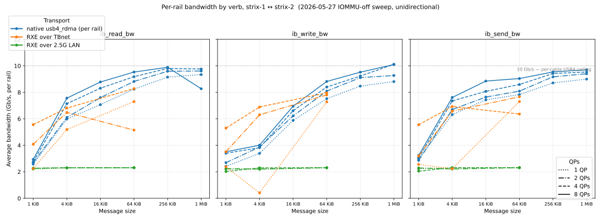
With IOMMU disabled, per-rail bandwidth between the native module and soft-RoCE over TBnet sits within ~10% of each other once you give either of them enough QPs to fill the pipe — both saturate the ~10 Gb/s per-cable USB4 ceiling on writes and sends. The 2.5 GbE RXE path flatlines around 2 Gb/s, NIC-bound, as expected.
Where the native module pulls ahead is latency. At 64 B / 1 QP, ib_write_lat is ~7 µs over native vs ~28 µs over RXE-on-Ethernet and ~65 µs over RXE-on-TBnet; reads are roughly twice that everywhere. Extending the sweep all the way to 1 MiB shows the curves crossing into the bandwidth-bound regime past the ~16 KiB knee, where "latency" is mostly size / bandwidth:
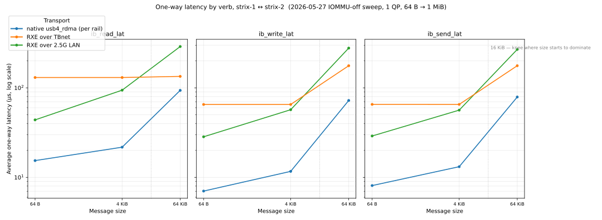
Driving all four HCAs in parallel with bidirectional traffic, the native module sustains ~48 Gb/s per direction (~95 Gb/s total) on ib_write_bw at 1 MiB / 8 QPs, with ib_send_bw and ib_read_bw landing at ~44 Gb/s and ~42 Gb/s respectively. The unidirectional 4-HCA aggregate is a touch higher (~52 Gb/s writes / ~47 Gb/s reverse):

Dropping message size to 64 KiB costs ib_write_bw a few Gb/s per rail (down to ~10 Gb/s) but leaves ib_send_bw essentially unchanged — the 4-rail aggregate is still ~41 Gb/s for writes and ~43 Gb/s for sends in both directions:
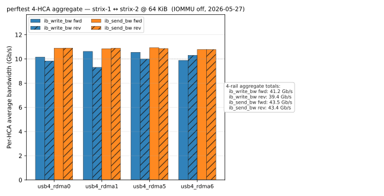
Single-HCA 64B round-trip latency stays in the single-µs / low-µs range for the same verbs:
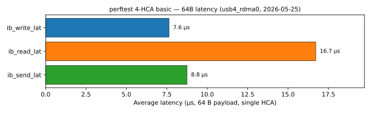
vLLM support
For a real workload we want to plug usb4_rdma into vLLM's tensor-parallel transport. vLLM uses NCCL under the hood; on AMD that becomes RCCL. RCCL talks to whichever IB device you point it at via the standard NCCL_IB_HCA environment variable, so we just need to load the module on both hosts, expose all four rails as separate HCAs, and point RCCL at them:
NCCL_IB_DISABLE=0 \
NCCL_IB_HCA=usb4_rdma0,usb4_rdma1,usb4_rdma2,usb4_rdma3 \
NCCL_NET_MERGE_LEVEL=LOC \
NCCL_MIN_NCHANNELS=4 NCCL_MAX_NCHANNELS=4 \
vllm serve $MODEL --tensor-parallel-size 2 ...No changes to vLLM, no changes to RCCL — just the kernel module and a few environment knobs.
vLLM benchmarks
End-to-end on Llama-3.1-8B with TP=2 across strix-1 and strix-2, sweeping concurrency from 1 to 256:
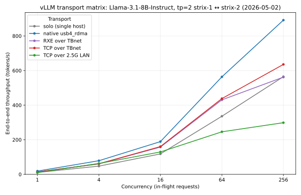
usb4_rdma cleanly beats the alternatives at every concurrency level above ~16; at concurrency 256 it hits 891 tps vs 634 for TCP-over-TBnet and 563 for RXE-over-TBnet — a ~40% uplift over the next-best Thunderbolt option, and ~3× the 2.5 GbE baseline.
Pinned head-to-head against a single-host baseline at concurrency 256, TP=2 over 4-HCA RDMA also gives a clear win — 767 total tok/s vs 567 on solo, a ~35% bump for an 8B model that fits on either host:
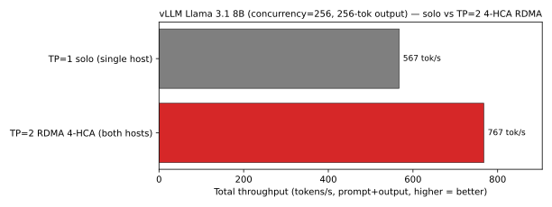
Even a small dense model like Qwen3-0.6B — which has no business being distributed — picks up a ~18% throughput gain from the same setup, suggesting the per-token interconnect tax is essentially in the noise:
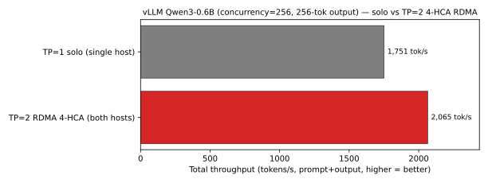
To put a number on how much of the win is RDMA-specific rather than just "going distributed at all", we re-ran the same two models on a clean 20 Gb/s link (wifi off to remove interference) and forced the TP=2 path through plain TCP over the 2.5G LAN as the comparator. TCP TP=2 lands at roughly half of either solo or RDMA for both models — 309 tps vs 588 solo on Llama, 780 vs 1913 solo on Qwen — so essentially all of the TP=2 RDMA uplift is the interconnect doing useful work, not Ray/vLLM TP scheduling:
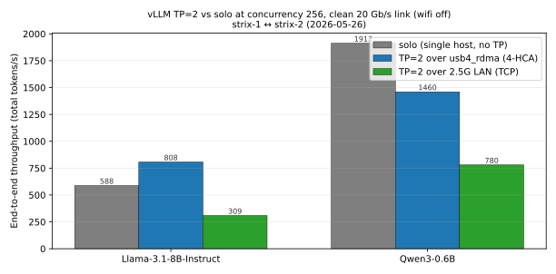
To sanity-check how much of that uplift depends on actually running USB4 at its rated speed, we re-ran the same two scenarios with each rail forced down to 10 Gb/s (one lane per cable instead of two — the "degraded" mode you'd see if Thunderbolt negotiation fell back, or one cable were a USB4 v1 / 10G-only part). Single-host inference is essentially unaffected — Qwen3 lands at 1915 vs 1925 tps, Llama at 589 vs 567 tps, well inside run-to-run noise. The 4-HCA TP=2 path, however, refuses to come up at all: the vLLM server fails to start on both hosts (Connection refused on every request, no successful row in the CSV). The headroom we have at 20 Gb/s isn't a luxury — it's what makes RCCL's NIC-bonded TP=2 collective feasible in the first place:
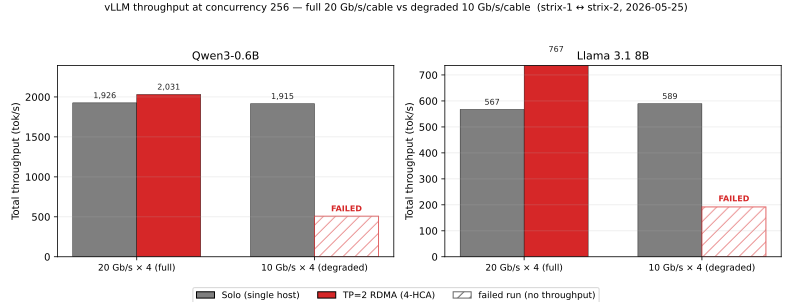
For a model that doesn't fit comfortably on a single Strix Halo, Gemma-4-26B-A4B (~52 GB bf16), the picture is more mixed. At low concurrency a TP=2 RDMA split actually loses to running TP=1 on a single host (where the network overhead is pure tax) — at c=2 the RDMA path catches and slightly beats local, and at c=8 the RDMA path collapses. Distribution wins decisively only for models that genuinely don't fit on one box:
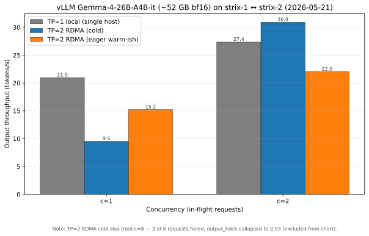
The lesson, repeated from the finetune section: distribution is a tax until the model is big enough that you have no choice.
Finetune
A 2-node FSDP fine-tune of SmolLM2-135M-Instruct (1 epoch, 800 examples) tells the same story even more starkly. We added a single-node baseline as a reference point:
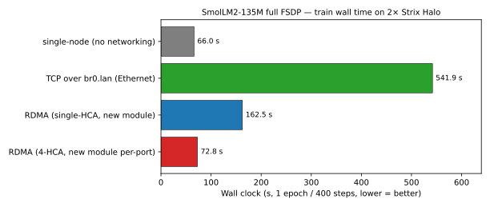
- Single-node completes in 66 seconds.
- 2-node ETH takes 542 s — 8× slower than just running on one host.
- 2-node RDMA (single-HCA) takes 162 s.
- 2-node RDMA (4-HCA, new per-port module) takes 73 s — within ~10% of the single-node baseline, and with
train_loss = 1.11matching the other transports.
For a 135M model that fits trivially in 128 GB, distributing the training across two hosts is pure overhead. The interconnect-bandwidth chart explains the relative ranking of the distributed options:
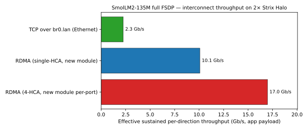
Correctness held up across all four transports — train_loss lands within a couple of percent of 1.11 everywhere, well under the anomaly threshold on the loss chart:
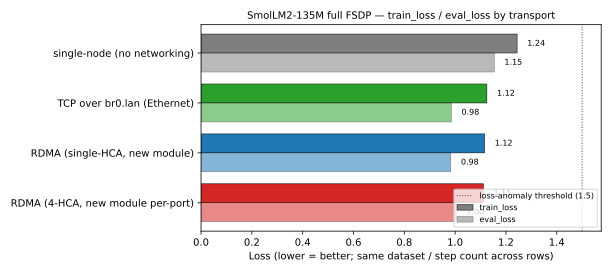
Stepping up to a real workload — a 1-step LoRA FSDP fine-tune of google/gemma-3-27b-it at batch=1, max_length=128 — the same transport ranking holds, with the absolute gap now measured in minutes rather than seconds:

- 2-node ETH takes 1359 s for a single training step (gradient sync over br0.lan).
- 2-node RDMA single-HCA drops that to 406 s — a 3.3× speedup, same shape as the SmolLM2 result.
- 2-node RDMA 4-HCA finishes in 126 s — 10.8× faster than ETH, and a further 3.2× over single-HCA RDMA.
The effective per-direction throughput tracks the wall-clock ranking exactly:
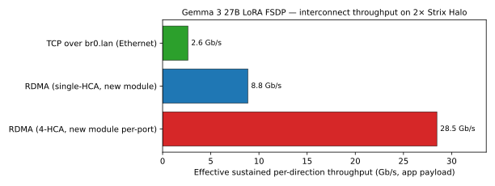
Pushing further into the "real workload" end of the spectrum — a 1-step full (non-LoRA) FSDP train of google/gemma-3-12b-it at batch=1, max_length=128 — the headline gap actually widens: 622 s on Ethernet drops to 56 s on 4-HCA RDMA, an 11× speedup that lines up cleanly with the LoRA result above:
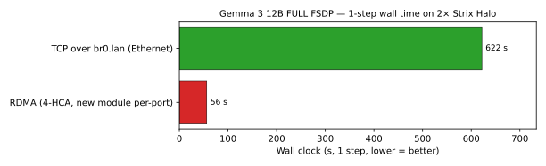